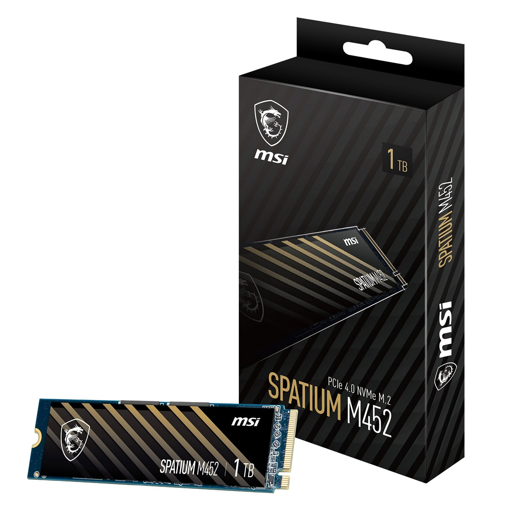

SSD ne işe yarar ve SSD mimarisi
SSD (Solid State Drive - Katı Hal Sürücüsü), verileri kalıcı olarak depolamak için mekanik diskler (HDD) yerine NAND flash bellek teknolojisini kullanan yeni nesil bir depolama aygıtıdır.İçinde dönen metal plakalar, okuma/yazma kafaları veya motorlar bulunmaz. Tamamen elektronik devrelerden ve yongalardan oluşur. Bu yapı sayesinde geleneksel HDD'lere göre kat kat daha hızlıdır, sessiz çalışır, darbelere karşı çok daha dayanıklıdır ve çok daha az güç tüketir

SSD Mimarisi

1. SSD Kontrolcüsü (The Controller - Beyin)
SSD’nin "merkezi sinir sistemidir". Kendi üzerinde mini bir işlemci barındırır. Bilgisayardan gelen verilerin nereye yazılacağını belirler, okuma isteklerini yönetir ve SSD'nin ömrünü uzatmak için arka planda kritik operasyonlar yürütürNAND Flash Bellek Yongaları (Depolama Alanı)
Verilerin kalıcı olarak saklandığı fiziksel yongalardır. İçerisinde milyonlarca mikro ölçekte hücre barındırır. Bu hücreler elektrik yükünü hapsederek (elektronları tuzağa düşürerek) siz bilgisayarı kapatsanız bile verinin saklanmasını sağlarDRAM Önbellek (Cache - Hafıza)
Tüm SSD'lerde bulunmaz (DRAM-less modeller de vardır). Kontrolcünün verileri nereye kaydettiğini tuttuğu harita gibidir. DRAM içeren SSD'ler, büyük dosya transferlerinde ve rastgele okuma/yazma işlemlerinde çok daha kararlı ve yüksek hızlar sunarArayüz ve Form Faktörü (Bağlantı Şekli)
SATA (2.5 inç): Klasik HDD'ler ile aynı boyuttadır, hızları ortalama 500-550 MB/s civarındadır.
M.2 NVMe (PCIe): Sakız paketine benzeyen, doğrudan anakarta takılan ve gigabaytlarca hıza (örn. 3500 MB/s ila 7000+ MB/s) ulaşabilen modern mimaridir.
Özet
Yazma Komutu: Bilgisayarınızdan bir dosya kaydetmek istediğinizde komut arayüzden kontrolcüye ulaşır
Yönetim: Kontrolcü, NAND yongaları üzerinde boş ve en uygun hücreleri seçer
Elektron Tuzağı: Elektrik sinyalleriyle hücrelerin içindeki yalıtkan katmanlar doldurulur ve veri kalıcı olarak saklanır
Okuma Komutu: Dosyayı açmak istediğinizde kontrolcü milisaniyeler içinde doğru adresi bulur ve ekranınıza aktarır. Mekanik parça olmadığı için bu süreç anlık gerçekleşir.